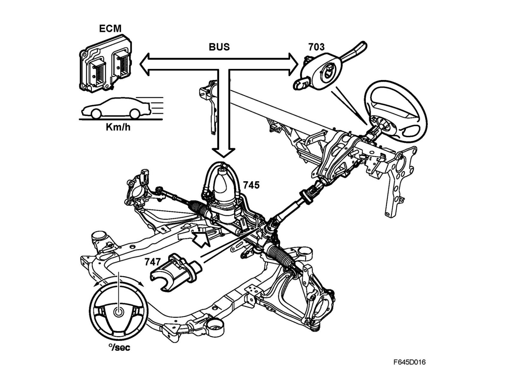

Brief Description
Brief description
In certain variants the Saab 9-3 Sport Sedan is equipped with a speed and steering speed dependent steering. (Electro-Hydraulic-Power-Steering, EHPS).
EHPS consists of steering gear and power steering unit, all built together in one complete unit.
The power-assisted steering gear is of the rack-and-pinion type consisting of control valve and servo cylinder in a common housing, equivalent to Saab's conventional power-assisted steering gears. The pump assembly consists of a pump unit with oil container, control module and a brushless motor. The steering wheel angle sensor is part of the system and is fitted above the power steering valve.
Cars with Z19 engine alternative that are equipped with ESP use steering wheel angle information from the steering wheel angle sensor in the CIM.